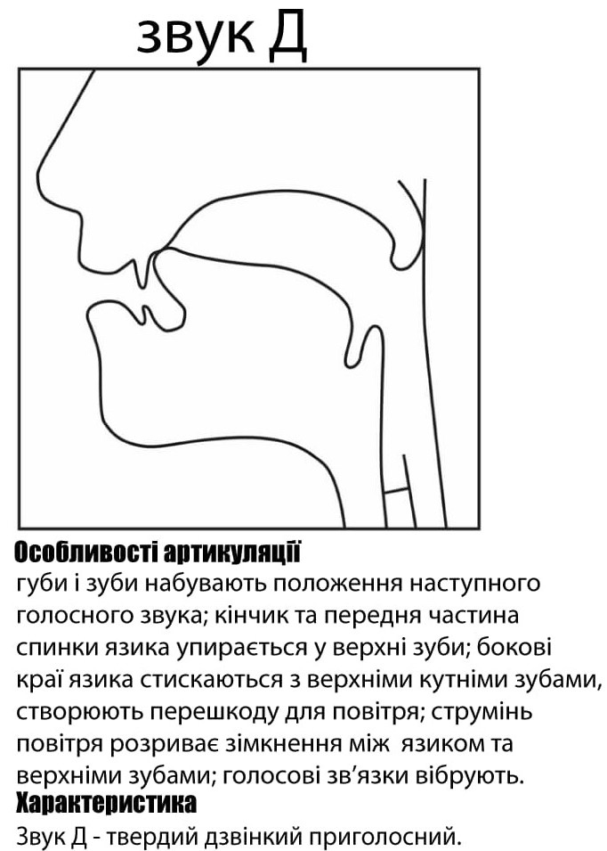
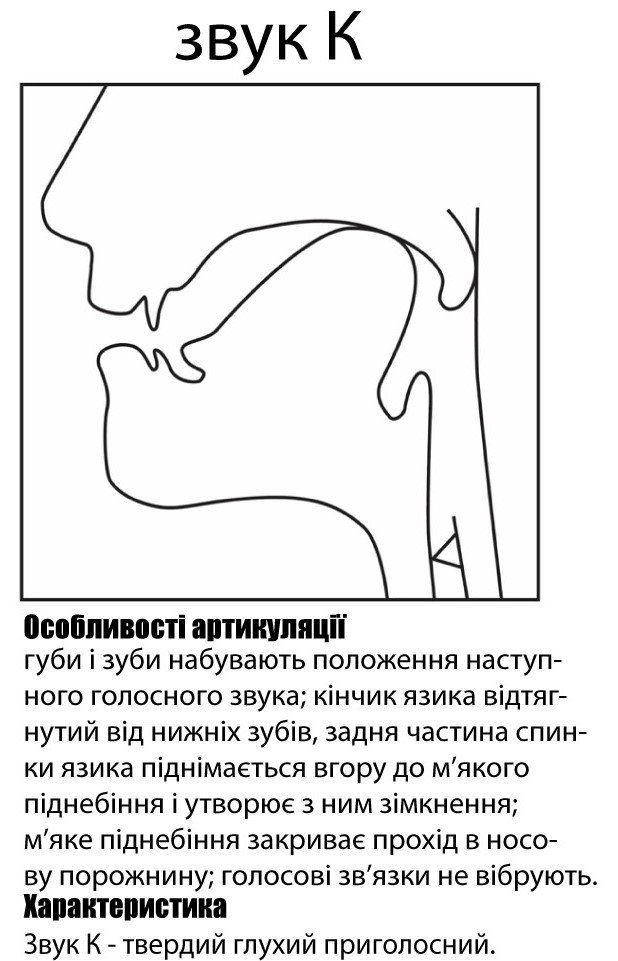
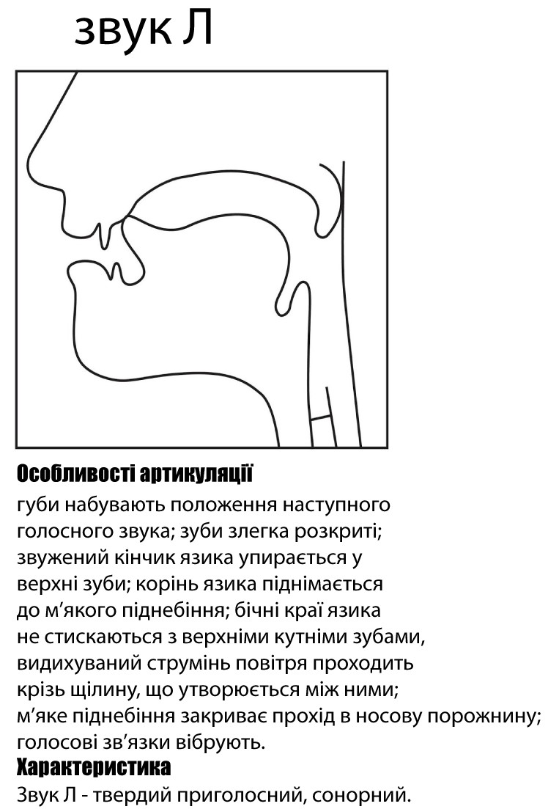

Артикуляція приголосних
Приголосні звуки в українській мові поділяються:
За місцем творення
● Губні:
губно-губні: [б], [п], [в], [м];
губно-зубні: [ф];
● Язикові:
Передньоязикові:
зубні: [д], [т], [з], [з'], [с], [с'], [дз], [дз'], [ц], [ц'], [л], [н];
альвеолярні: [р], [р'], [ж], [ш], [дж], [ч];
зубно-альвеолярні: [д'], [т'], [л'], [н'];
Середньоязикові: [й]
Задньоязикові:[к], [х], [ґ]
● Глоткові: [г]
За способом творення:
● Зімкнені:
Зімкнено-проривні: [б], [п], [д], [д'], [т], [т'], [ґ], [к];
Зімкнено-прохідні: [м], [н], [н'];
● Щілинні:
Серединні: [в], [ф], [з], [з'], [с], [с'], [й], [ж], [ш], [х], [г];
Бокові: [л], [л'];
● Афрікати: [дз], [дз'], [ц], [ц'], [дж], [ч];
● Дрижачі: [р], [р']
За участю голосу й шуму:
● Сонорні: [в], [м], [л], [л'], [н], [н'], [р], [р'], [й];
● Шумні:
Дзвінкі: [б], [д], [д'], [з], [з'], [дз], [дз'], [ж], [дж], [ґ], [г];
Глухі: [п], [ф], [т], [т'], [с], [с'], [ц], [ц'], [ш], [ч], [к], [х].
За ступенем палаталізації:
● Тверді: [д] , [т], [з], [с], [дз], [ц], [н], [л], [р]
● М'які: [д'], [т'], [з'], [с'], [дз'], [ц'], [н'], [л'], [р'].
-
[б]- дзвінкий, губно-губний, зімкнено-проривний,твердий. Уклад язика залежить від наступного звуку.Нижня губа змикається з верхньою. Зімкнення раптово розривається видихуваним струменем повітря, внаслідок чого утворюється специфічний шум, утворюється з участю голосу.
-

Опис додати сюдиОпис додати сюдиОпис додати сюди
-

Опис додати сюдиОпис додати сюдиОпис додати сюди
-

[д] - дзвінкий, передньоязиковий, зубний, зімкнено-проривний, твердий. Передня спинка разом з кінчиком язика впирається у верхні зуби, а нижня частина язика притискується до нижніх зубів. Зімкнення, що утворюється між передньою частиною спинки язика і верхніми зубами, раптово розривається сильним повітряним струменем, завдяки чому виникає характерний шум. Голосові зв'язки під час артикуляції працюють.
-

Опис додати сюдиОпис додати сюдиОпис додати сюди
-

-

Опис додати сюди Опис додати сюди Опис додати сюди
-

Опис додати сюдиОпис додати сюдиОпис додати сюди
-

Опис додати сюдиОпис додати сюдиОпис додати сюди
-

Опис додати сюдиОпис додати сюдиОпис додати сюдиОпис
-
Опис додати сюдиОпис додати сюдиОпис додати сюди
-

[і]-нелабіалізований голосний перед[1]нього ряду, високого підняття. Під час вимови [і] язик просувається до передньої частини твердого піднебіння або до верхніх зубів та альвеол, набуває опуклої форми. Губи активної участі не беруть, розтягнені значно більше, ніж при артикуляції [и] та [е], утворюють вузьку щілину.
-

Опис додати сюди Опис додати сюди Опис додати сюди
-
Опис додати сюдиОпис додати сюдиОпис додати сюди
-

Опис додати сюдиОпис додати сюдиОпис додати сюди
-

Опис додати сюдиОпис додати сюдиОпис додати сюдиОпис
-
Опис додати сюдиОпис додати сюдиОпис додати сюди
-

Опис додати сюдиОпис додати сюдиОпис додати сюди